shifting the narrative,
changing the system.
We cover the economic movements, policies, and ideas that support life within planetary limits. That means better economic democracy, public investment, post-growth thinkers and organizers proving that a new, more just economy is already taking shape.
We track the constituencies, campaigns, and organizing efforts working to change the systems beneath inequality and unmet needs. From electoral politics to grassroots movements, we're building a map that shows how power-building work that's too often ignored by traditional media.
Our narratives are grounded in the premise that ecological and human wellbeing are inseparable. We cover the work of ecological restoration, making attractive industries, and building a world where both humanity and nature can thrive.
Better Future Media works across written and video media formats, built to meet people where they already are and move them toward a deeper understanding of the systems shaping their lives.
Long-form conversations with the organizers, economists, politicians, and thinkers contributing to the movement.
Each episode dives into the systems shaping our lives to ask: who holds power here, what does the alternative look like, and how can we bring this vision to life?
Join our XX monthly listeners:
Our essays cover the stories, ideas, and movements at the intersection of economic justice, political power, and ecological health. Reported pieces, analysis, and resources for readers who want to dive deeper.
Join +4,000 other readers and subscribe to our Substack
Short-form video and written content that meets people where they are and brings them into a deeper conversation. Our social channels on Instagram, TikTok, and Threads serve as entry points into the ideas, movements, and stories we cover across the podcast and Substack.
Better Future Media is founded and led by Michael Mezzatesta — a content creator and digital strategist who has spent over a decade building audiences for social and environmental causes that matter. His short-form video channels, which translate complex economic, political, and environmental issues, has amassed over 500,000 followers and reaches millions of viewers each month.